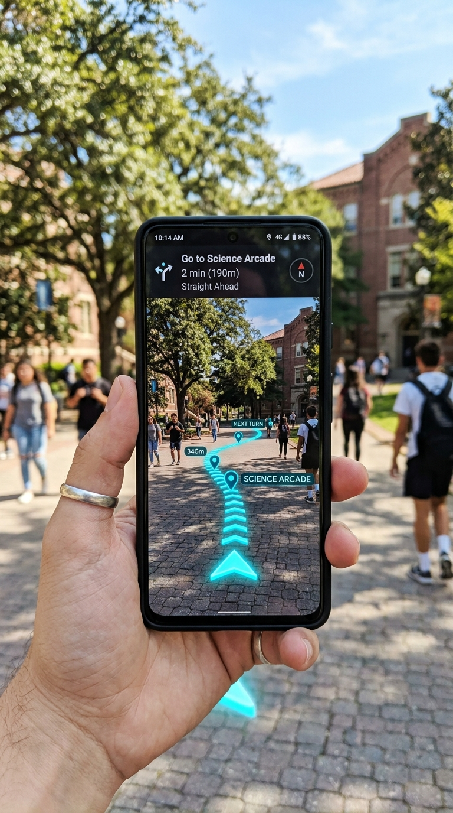
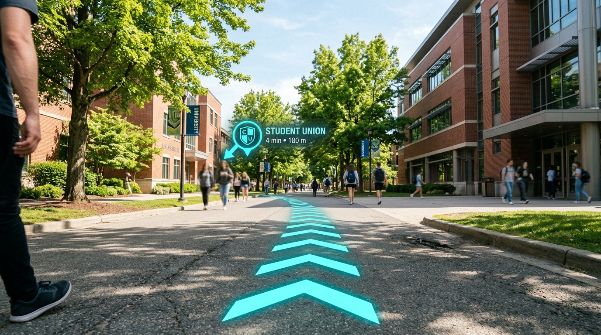

Walk your campus in augmented reality
Turn outdoor walkways into live 3D routes anchored to physical GPS coordinates. Built for students and visitors navigating KITS Ramtek.

Two viewpoints working as one
EnRouteAR couples your camera feed with a synchronised satellite mini-radar so you never lose physical context while walking.

AR CAMERA LENS3D Physical Waypoints
Cyan ground markers trace the pedestrian path directly on the asphalt, with a 3D pointer pinned over your destination building.
Top-Down Map Tracking
An integrated Mapbox satellite sheet rotates with your device heading, displaying the walking polyline and real-time geodetic position.
14 campus destinations
Explore pre-mapped geodetic waypoints across KITS Ramtek or start navigation directly with one tap.
Architecture built for the web
Pure client-side execution combining hardware sensors with WebGL rendering.
Location-Based WebAR
AR.js and A-Frame project virtual geometry into three-dimensional space based on spherical coordinate transforms from device GPS readings.
A-FRAME 1.3 • THREE.JSPedestrian Path Routing
Walking routes are calculated through the Mapbox Directions API, generating sub-meter intermediate waypoints spaced two meters apart.
MAPBOX DIRECTIONS v5Sensor Fusion Bearing
Device Orientation events synchronize camera heading and map rotation with real-world magnetic north in real time.
GEOLOCATION • GYROSCOPEKavikulguru Institute of Technology & Science
Founded in 1985 at Ramtek with its foundation stone laid by former Prime Minister Late Sri P. V. Narasimha Rao, KITS Ramtek spans a 48.96-acre campus affiliated with RTMNU Nagpur.
Get in touch
Questions regarding EnRouteAR or campus navigation? Send a message directly to the project team.